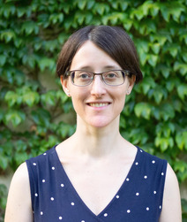
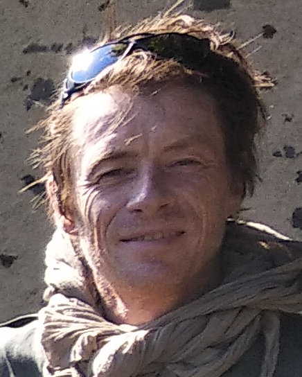
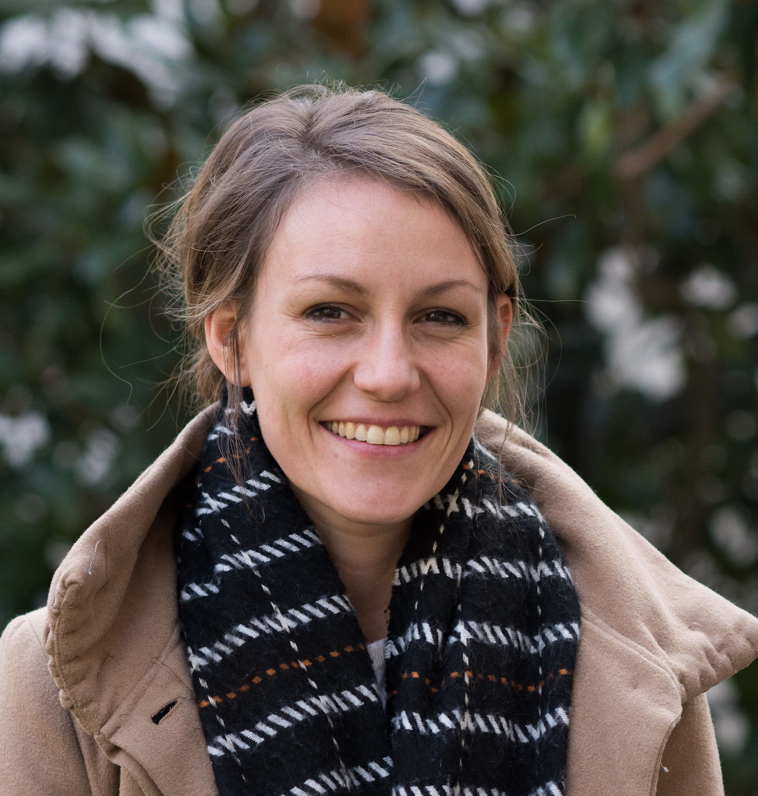
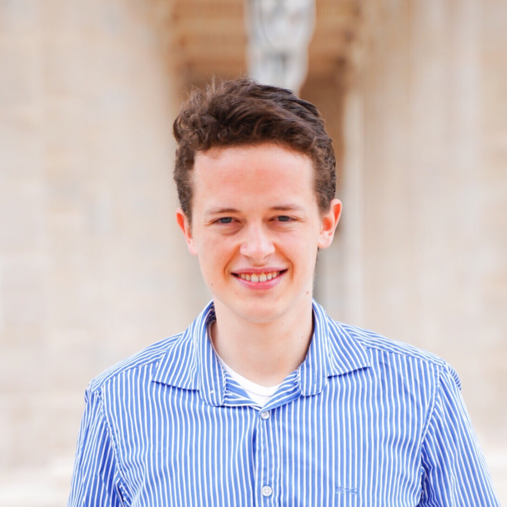

POPILS 2025
POPILS
Journée Parcimonie, Optimisation et Problèmes Inverses Lyon Saint-Etienne
19 juin 2025
19 juin 2025
Cette édition de POPILS a pour objectif de réunir les étudiants et les chercheurs de Lyon, Saint-Étienne et Annecy intéressés par les domaines de l’optimisation, de la résolution de problèmes inverses et de la parcimonie. Elle vise à créer une dynamique de collaboration régionale en encourageant les échanges interdisciplinaires et en identifiant des opportunités de coopération.
Pour vous inscrire, veuillez remplir ce formulaire. L’inscription est gratuite mais obligatoire.
Merci de bien vouloir indiquer si vous souhaitez présenter vos travaux lors des sessions posters.
Orateurs
|  |  |  |  |
| Julie Digne Directrice de Recherche LIRIS CNRS LIRIS Lyon |
Rodolphe Leriche Directeur de Recherche CNRS LIMOS EMSE Saint-Etienne |
Nelly Pustelnik Directrice de Recherche Lab PHYS ENS Lyon |
Antoine Collas Chercheur postdoctoral INRIA Saclay |
Date et lieu
Vendredi 19 juin 2025
B104 Polytech Annecy
B104 Polytech Annecy
Equipe organisatrice
- Yassine Mhiri, LISTIC
- Argheesh Bhanot, LISTIC
- Jérémy Cohen, CNRS, CREATIS
- Jordan Frecon, LabHC
- Maxime Guillaud, Inria, CITI
- Nelly Pustelnik, CNRS, ENS Lyon
- Laurent Seppecher, ICJ
- Juliàn Tachella, CNRS, ENS Lyon
Sponsors : Nous remercions xxx qui soutiennent la journée POPILS